Ground truth is the printed page. The red box marks the OLIVER staff row; the blue box marks the disputed note area. This page is a phone audit surface, not a lock by itself.
m5 - "sky"
Ab3 whole note
Staff identity: First printed quartet system, OLIVER staff is labeled directly.
Printed-page read: The notehead is on the top line of the bass staff. Bass-clef top line is A; six-flat key makes it A-flat.
Chord check: Cadence under confirmed Lead Cb4. With Bass below, Ab3 supplies the Ab-minor cadence tone.
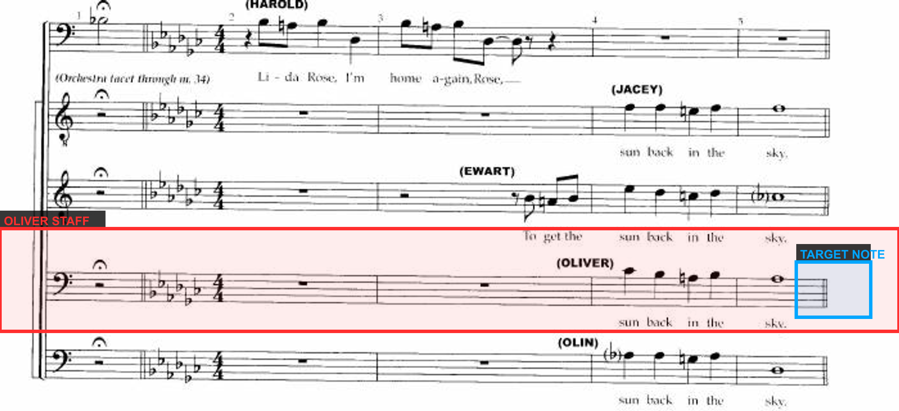
Full system crop - red box is OLIVER staff
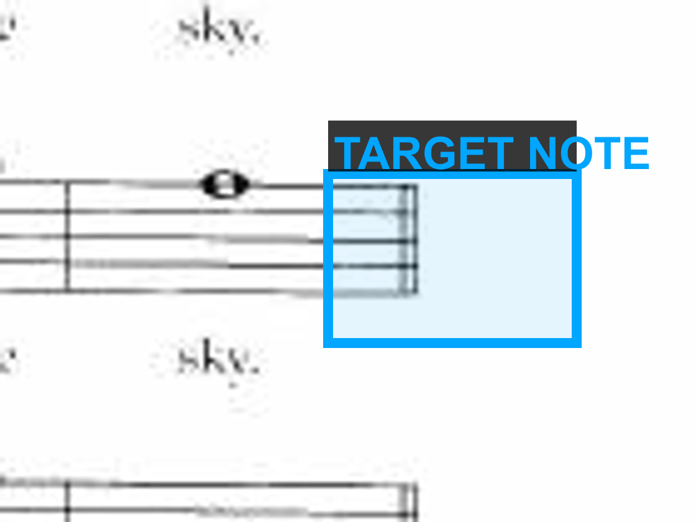
Zoom on the target OLIVER note(s). Source: page-196.jpg.
m9 - "shy"
Ab3 whole note
Staff identity: Second printed quartet system, OLIVER staff is labeled directly.
Printed-page read: The whole note sits on the OLIVER bass-staff top line: A-flat in six flats.
Chord check: Same cadence family as m5 under confirmed Lead Cb4; Ab3 is the baritone cadence tone.
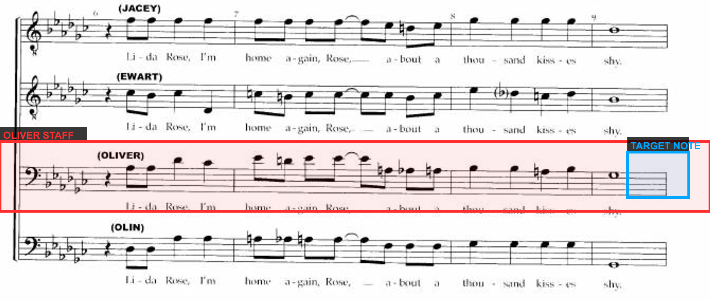
Full system crop - red box is OLIVER staff
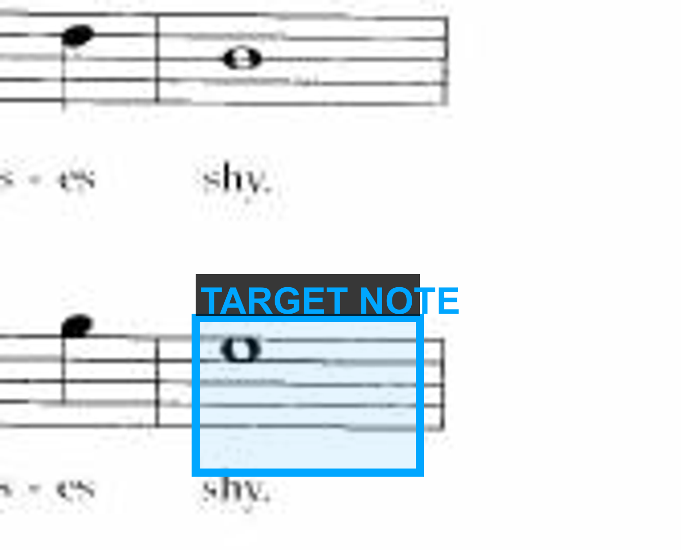
Zoom on the target OLIVER note(s). Source: page-196.jpg.
m21 - "name"
Ab3 whole note
Staff identity: Page 197 labels the first system: JACEY, EWART, OLIVER, OLIN. In the target system, OLIVER is the third staff.
Printed-page read: On the third staff of the target system, the held note is on the bass-staff top line with a printed flat reminder: Ab3.
Chord check: Cadence under confirmed Lead Cb4; Ab3 supplies the lower Ab-minor chord tone.
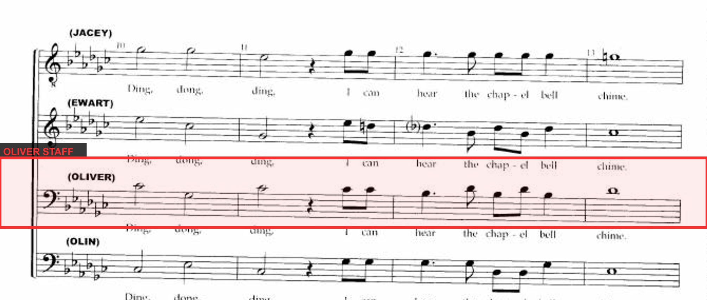
Staff-order proof for this page
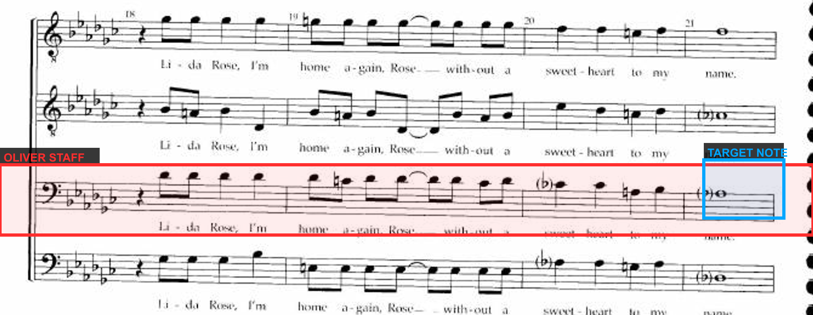
Full system crop - red box is OLIVER staff
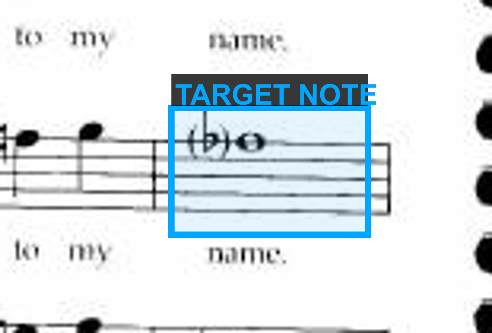
Zoom on the target OLIVER note(s). Source: page-197.jpg.
m25 - "hop-ing"
Ab3 half, then Bb3 half
Staff identity: First printed system on page 198 has OLIVER labeled directly.
Printed-page read: First half: top-line A in six flats = Ab3. Second half: space above the bass staff = B, flat by key = Bb3.
Chord check: Other voices from source/page: first half has Db3, E-natural4, Ab4; second half has Eb3, Eb4, G4. OLIVER reads as Ab3 -> Bb3.
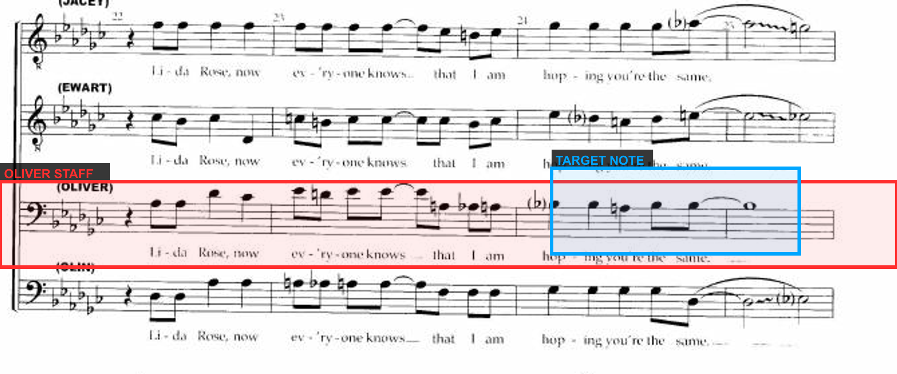
Full system crop - red box is OLIVER staff
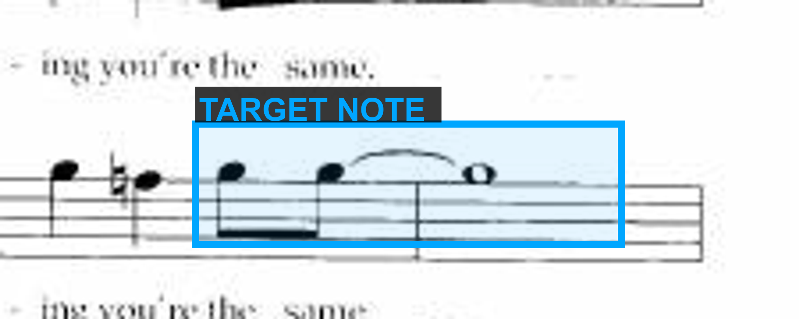
Zoom on the target OLIVER note(s). Source: page-198.jpg.
m29 - "fine"
Bb3 whole note with fermata
Staff identity: Page 198 labels OLIVER on system 1; in the target system, OLIVER remains the third staff.
Printed-page read: The fermata whole note sits in the space above the bass staff. That space is B; six-flat key makes it Bb3.
Chord check: Cadential Eb sonority under confirmed Lead Eb4. Bb3 is the fifth of the Eb cadence, not the old Eb3 octave-double guess.
Staff-order proof for this page
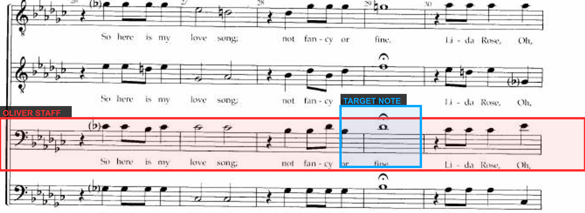
Full system crop - red box is OLIVER staff
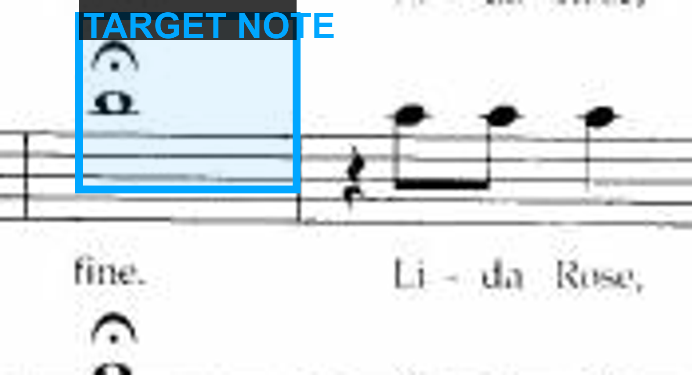
Zoom on the target OLIVER note(s). Source: page-198.jpg.